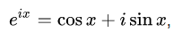
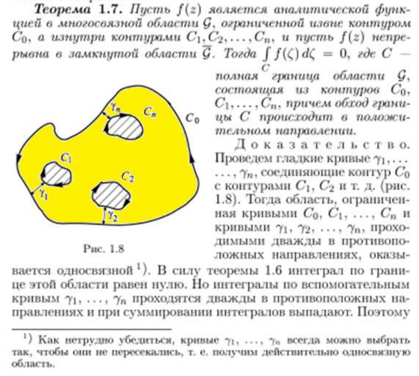
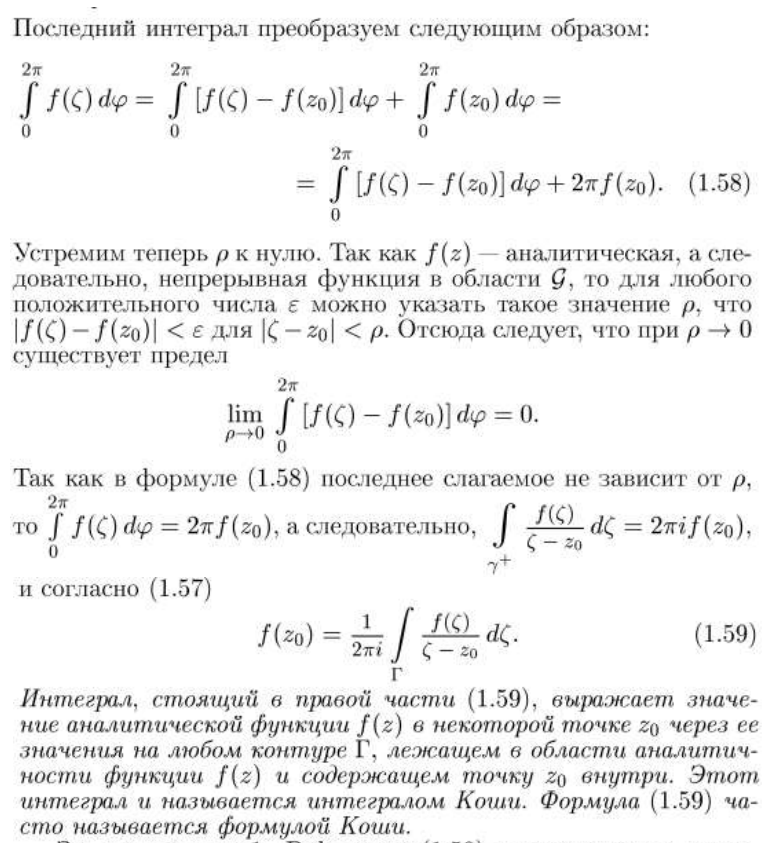
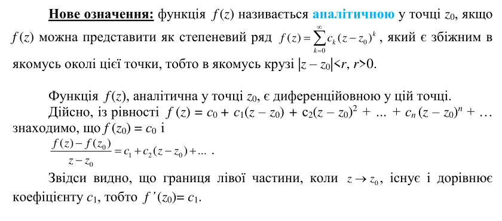
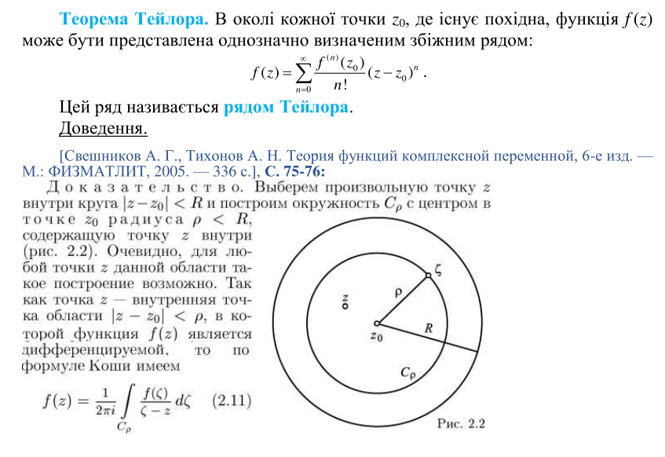

Відстань між комплексними числами
Інтернет
Формула Ейлера

Інтернет
1 | Комплексне число
Комплéксним числом називається упорядкована пара $(x, y)$ дійсних чисел, для якої наступним чином визначені рівність, арифметичні дії та нерівність:
1) $(x, y) = (x_1, y_1) \iff (x = x_1)\, \& \, (y=y_1)$
2) $(x, y) + (x_1, y_1) \equiv (x+x_1, y+y_1) \quad (x, y)(x_1, y_1) \equiv (xx_1-yy_1, xy_1+x_1y)$
3) $(x,0) \leq (x_1,0) \iff (x \leq x_1)$.
1) $(x, y) = (x_1, y_1) \iff (x = x_1)\, \& \, (y=y_1)$
2) $(x, y) + (x_1, y_1) \equiv (x+x_1, y+y_1) \quad (x, y)(x_1, y_1) \equiv (xx_1-yy_1, xy_1+x_1y)$
3) $(x,0) \leq (x_1,0) \iff (x \leq x_1)$.
Чертов с.3
1 | Алгебраїчна форма комплексного числа
$$z = x + iy$$
Чертов с.4
1 | Афікс комплексного числа
Точка на площини з декартовими координатами $(x, y)$ цього числа.
Чертов с.6
1 | Тригонометрична форма комплексного числа
$$z = \rho (\cos\varphi + i \sin \varphi)$$
Це випливає з:
$$ z = x + iy = $$
$$ = \sqrt{x^2 + y^2} \left( \cos \left(\arctan \frac{y}{x} + 2 \pi k\right) + i \sin \left( \arctan \frac{y}{x} + 2 \pi k \right)\right) \text{, де } k \in \mathbb{Z} $$
Ну і власне перехід:
$$ x = \rho \cos \varphi $$
$$ y = \rho \sin \varphi $$
Або в іншу сторону:
$$ \rho = \sqrt{x^2 + y^2},\ \varphi = \arctan \frac{y}{x} $$
Чертов с. 6
1 | Модуль або абсолютна величина комплексного числа
$$ |z| = \varphi = \sqrt{x^2 + y^2} $$
Чертов с.7
1-1 | Властивості модуля комплексного числа | Нерівність трикутника | Нерівність Коші
а) $|(x,0)| = |x|$
б) $||z|| = |z|$
в) $|z|>0$, якщо $z≠(0,0)$ і $|z|=0$, якщо $z=(0,0)$
г) $z \cdot z = |z|^2$
д) $|z \cdot z_1| = |z| \cdot |z_1|$
е) $\left| \frac{z}{z_1} \right| = \frac{|z|}{|z_1|}$, якщо $z_1≠(0,0)$
ж) Нерівність трикутника: $$ ||z_1|-|z_2||≤ |z_1+ z_2|≤ |z_1|+|z_2| $$ з) Нерівність Коші: $$ \left| \sum_{i=1}^n a_i b_i \right|^2 \leq \sum_{i=1}^n \left| a_i \right|^2 \ \sum_{i=1}^n \left|b_i\right|^2 \text{, де } a_1, a_2, \dots, a_n, b_1, b_2, \dots, b_n \in \mathbb{C} $$
Доведення:
а) $ |(x, 0)| = \sqrt{x^2 + 0^2} = \sqrt{x^2} = |x| $
б) $ \left\| z \right\| = \left\| x + iy \right\| = \left| \sqrt{x^2+y^2} \right| = \sqrt{x^2+y^2} = |z|$
в) Очевидно.
г) Доведено раніше під час введення спряженого комплексного числа
д) $$ |z \cdot z_1 | = \left| (x+iy)(x_1+iy_1) \right| = $$ $$ = \left|(xx_1-yy_1) + (xy_1+yx_1)i \right| = \sqrt{(xx_1-yy_1)^2 + (xy_1+yx_1)^2} = $$ $$ = \sqrt{(x^2 + y^2)(x_1^2 + y_1^2)} = \sqrt{|z|^2|z_1|^2} = |z|\cdot |z_1|$$ е) $$ \left| \frac{z}{z_1} \right| = \left| \frac{x+iy}{x_1 + iy_1} \right| = \left| \frac{xx_1+yy_1}{x_1^2+y_1^2} + i\frac{yx_1-xy_1}{x_1^2 + y_1^2} \right| = $$ $$ \frac{\sqrt{(xx_1+yy_1)^2 + (yx_1-xy_1)^2}}{|z_1|^2} = \frac{\sqrt{x^2(x_1^2+y_1^2) + y^2(x_1^2 - y_1^2)}}{|z_1|^2} = \frac{|z|}{|z_1|^2}$$

б) $||z|| = |z|$
в) $|z|>0$, якщо $z≠(0,0)$ і $|z|=0$, якщо $z=(0,0)$
г) $z \cdot z = |z|^2$
д) $|z \cdot z_1| = |z| \cdot |z_1|$
е) $\left| \frac{z}{z_1} \right| = \frac{|z|}{|z_1|}$, якщо $z_1≠(0,0)$
ж) Нерівність трикутника: $$ ||z_1|-|z_2||≤ |z_1+ z_2|≤ |z_1|+|z_2| $$ з) Нерівність Коші: $$ \left| \sum_{i=1}^n a_i b_i \right|^2 \leq \sum_{i=1}^n \left| a_i \right|^2 \ \sum_{i=1}^n \left|b_i\right|^2 \text{, де } a_1, a_2, \dots, a_n, b_1, b_2, \dots, b_n \in \mathbb{C} $$
Доведення:
а) $ |(x, 0)| = \sqrt{x^2 + 0^2} = \sqrt{x^2} = |x| $
б) $ \left\| z \right\| = \left\| x + iy \right\| = \left| \sqrt{x^2+y^2} \right| = \sqrt{x^2+y^2} = |z|$
в) Очевидно.
г) Доведено раніше під час введення спряженого комплексного числа
д) $$ |z \cdot z_1 | = \left| (x+iy)(x_1+iy_1) \right| = $$ $$ = \left|(xx_1-yy_1) + (xy_1+yx_1)i \right| = \sqrt{(xx_1-yy_1)^2 + (xy_1+yx_1)^2} = $$ $$ = \sqrt{(x^2 + y^2)(x_1^2 + y_1^2)} = \sqrt{|z|^2|z_1|^2} = |z|\cdot |z_1|$$ е) $$ \left| \frac{z}{z_1} \right| = \left| \frac{x+iy}{x_1 + iy_1} \right| = \left| \frac{xx_1+yy_1}{x_1^2+y_1^2} + i\frac{yx_1-xy_1}{x_1^2 + y_1^2} \right| = $$ $$ \frac{\sqrt{(xx_1+yy_1)^2 + (yx_1-xy_1)^2}}{|z_1|^2} = \frac{\sqrt{x^2(x_1^2+y_1^2) + y^2(x_1^2 - y_1^2)}}{|z_1|^2} = \frac{|z|}{|z_1|^2}$$
Чертов с.7
1-2 | Аргумент комплексного числа
Чертов с.10
1-2 | Властивості аргумента комплексного числа

Чертов с.10
1 | Формула Муавра. Корінь із комплексного числа
Чертов с.11
1-3 | 8 | Основна теорема алгебри
Чертов с.12 Чертов с.61
3 | Послідовність комплексних чисел
... - це перенумерована нескінченна множина комплексних чисел. Позначають як ${z_n}$.
Чертов с.19 Свешников с.19
3 | Границя послідовності
Число $z$ називається границею послідовності ${z_n}$, якщо для будь якого додатнього числа $\varepsilon$ можна вказати такий номер $N(\varepsilon)$, починаючи з якого всі елементи $z_n$ цієї послідовності задовільняють нерівність:
$$ \forall \varepsilon > 0 \quad \exists N \in \mathbb{N} \quad \forall n \geq N \quad (|z_n-z| < \varepsilon) $$
Чертов с.19 Свешников с.19
3 | Збіжна послідовність
Послідовність ${z_n}$, що має границю $z$, називається збіжною до $z$, що записується у вигляді:
$$ \lim_{n \to \infty} z_n = z $$
Чертов с.19 Свешников с.19
3 | Епсілон окіл точки
... - множина точок $z$ комплексної площини, що лежить всередині окружності радіусом $\varepsilon$ з центром в точці $z_0$, при $|z-z_0| < \varepsilon$.
Чертов с.20 Свешников с.20
3-1 | 1.1 Необхідна і достатня умова збіжності послідовності
Необхідною і достатньою умовою збіжності послідовності ${z_n}$ є збіжність послідовностей дійсних чисел ${a_n}$ і ${b_n}$, при $z_n = a_n + b_n$.
Доведення:
Якщо послідовність ${z_n}$ збігається до числа $z = a + ib$, то для будь-якого $\varepsilon > 0$ $|a_n - a| \leq |z-n| < \varepsilon \ $ і $\ |b_n - b| < \varepsilon \ $ при $\ n \geq N(\varepsilon)$. Це і доводить збіжність послідовностей ${a_n}$ та ${b_n}$ до $a$ та $b$ відповідно.
Обернене твердження випливає з відношення $|z_n - z| = \sqrt{(a_n - a)^2 + (b_n-b)^2}$, де $a$ і $b$ є границями послідовностей $a_n$ і $b_n$ та $z = a + ib$.
Доведення:
Якщо послідовність ${z_n}$ збігається до числа $z = a + ib$, то для будь-якого $\varepsilon > 0$ $|a_n - a| \leq |z-n| < \varepsilon \ $ і $\ |b_n - b| < \varepsilon \ $ при $\ n \geq N(\varepsilon)$. Це і доводить збіжність послідовностей ${a_n}$ та ${b_n}$ до $a$ та $b$ відповідно.
Обернене твердження випливає з відношення $|z_n - z| = \sqrt{(a_n - a)^2 + (b_n-b)^2}$, де $a$ і $b$ є границями послідовностей $a_n$ і $b_n$ та $z = a + ib$.
Чертов с.20 Свешников с.20
3-2 | 1.2 Із всякої збіжної послідовності можна виокремити збіжну підпослідовність
Доведення:
${z_n}$ обмежена $\implies$ відповідні їй дійсні послідовності ${a_n}$ і ${b_n}$ обмежені.
${a_n}$ обмежена $\implies$ із неї можна виокремити збіжну підпослідовність ${a_{n_i}}$ границю якої позначимо за $a$.
${a_{n_i}}$ відповідає послідовність ${b_{n_i}}$, що також є обмеженою $\implies$ з неї також можна виокремити збіжну підпослідовність ${b_{n_{i_k}}}$, границю якої позначимо за $b$.
При цьому відповідна послідовність ${a_{n_{i_k}}}$ все ще збігається до $a$ $\implies$ послідовність комплексних чисел ${z_{n_{i_k}}} = {a_{n_{i_k}} + ib_{n_{i_k}}}$ також є збіжною, причому $\lim_{n_{i_k} \to \infty} z_{n_{i_k}} = z = a + ib$ $_\blacksquare$.
${z_n}$ обмежена $\implies$ відповідні їй дійсні послідовності ${a_n}$ і ${b_n}$ обмежені.
${a_n}$ обмежена $\implies$ із неї можна виокремити збіжну підпослідовність ${a_{n_i}}$ границю якої позначимо за $a$.
${a_{n_i}}$ відповідає послідовність ${b_{n_i}}$, що також є обмеженою $\implies$ з неї також можна виокремити збіжну підпослідовність ${b_{n_{i_k}}}$, границю якої позначимо за $b$.
При цьому відповідна послідовність ${a_{n_{i_k}}}$ все ще збігається до $a$ $\implies$ послідовність комплексних чисел ${z_{n_{i_k}}} = {a_{n_{i_k}} + ib_{n_{i_k}}}$ також є збіжною, причому $\lim_{n_{i_k} \to \infty} z_{n_{i_k}} = z = a + ib$ $_\blacksquare$.
Чертов с.20 Свешников с.20
3 | Критерій збіжності Коші для послідовності
Послідовність ${z_n}$ збіжна тоді і тільки, коли
$$ \forall \varepsilon > 0 \quad \exists N \in \mathbb{N} \quad \forall n \geq N \quad \forall m \in \mathbb{N} \quad |z_{n+m} - z_n| < \varepsilon $$
Доведення:
Для доведення критерія Коші використаємо еквівалентність збіжності послідовності ${z_n}$ і послідовностей дійсних чисел ${a_n}$ і ${b_n}$, а також тиєю обставиною, що критерій Коші є необхідною і достатньою ознакою збіжності послідовностей дійсних чисел.
Необхідність
${z_n}$ збіжна $\implies$ збіжні ${a_n}$ і ${b_n}$ $\implies$
$\forall \varepsilon > 0 \quad \forall m > 0$ $$ |a_n - a_{n+m}| < \frac{\varepsilon}{2} \text{, при } n \geq N_1(\varepsilon)$$ $$ |b_n - b_{n+m}| < \frac{\varepsilon}{2} \text{, при } n \geq N_2(\varepsilon)$$ Взявши за $N(\varepsilon)$ більше з $N_1$ $N_2$ з нерівності трикутника отримуємо при $n > N(\varepsilon)$: $$ |z_n - z_{n+m}| \leq |a_n - a_{n+m}| + |b_n - b_{n+m}| $$
Достатність
Із відношення з умови теореми при $n \geq N$ випливають нерівності $$ |a_n - a_{n+m}| \leq |z_n - z_{n+m}| < \varepsilon $$ $$ |b_n - b_{n+m}| \leq |z_n - z_{n+m}| < \varepsilon $$ що і є достатньою умовою збіжності послідовностей ${a_n}$ та ${b_n}$, тобто збіжності ${z_n}$ $_\blacksquare$.
Для доведення критерія Коші використаємо еквівалентність збіжності послідовності ${z_n}$ і послідовностей дійсних чисел ${a_n}$ і ${b_n}$, а також тиєю обставиною, що критерій Коші є необхідною і достатньою ознакою збіжності послідовностей дійсних чисел.
Необхідність
${z_n}$ збіжна $\implies$ збіжні ${a_n}$ і ${b_n}$ $\implies$
$\forall \varepsilon > 0 \quad \forall m > 0$ $$ |a_n - a_{n+m}| < \frac{\varepsilon}{2} \text{, при } n \geq N_1(\varepsilon)$$ $$ |b_n - b_{n+m}| < \frac{\varepsilon}{2} \text{, при } n \geq N_2(\varepsilon)$$ Взявши за $N(\varepsilon)$ більше з $N_1$ $N_2$ з нерівності трикутника отримуємо при $n > N(\varepsilon)$: $$ |z_n - z_{n+m}| \leq |a_n - a_{n+m}| + |b_n - b_{n+m}| $$
Достатність
Із відношення з умови теореми при $n \geq N$ випливають нерівності $$ |a_n - a_{n+m}| \leq |z_n - z_{n+m}| < \varepsilon $$ $$ |b_n - b_{n+m}| \leq |z_n - z_{n+m}| < \varepsilon $$ що і є достатньою умовою збіжності послідовностей ${a_n}$ та ${b_n}$, тобто збіжності ${z_n}$ $_\blacksquare$.
Чертов с.21 Свешников с.21
3 | Нескінченно зростаюча послідовність
... - це послідовність комплексних чисел ${z_n}$ така, що
$$\forall \varepsilon > 0 \quad \exists N \in \mathbb{N} \quad \forall n \geq N \quad |z_n| > \varepsilon $$
Чертов с.21 Свешников с.21
3 | Нескінченно віддалена точка комплексної множини
... - ізольована особлива точка однозначної аналітичної функції для якої за колом деякого радіусу немає ніоднієї (кінцевої) особливої точки.
... - точка до якої збігається нескінченно зростаюча послідовність.
Чертов с.22 Свешников с.22
3 | Повна комплексна площина
... - це сукупність звичайної комплексної площини та нескінченно віддаленої точки.
Чертов с.22 Свешников с.22
4.1 | Однозначна функція комплексної змінної
... - це відношення по якому кожному комплексному числу $z$ із множини комплексних чисел $D$ відповідає єдине комплексне число $w$. Таке відношення позначають $w = f(z)$ або $f: z \to w$.
Чертов с.23 Ейдерман с.25
4.2 | Границя функції комплексної змінної
Число $w_0$ називається границею (за Гейне) функції $f: E \to C$ при $z \to z_0$, якщо для будь-якої послідовності ${z_n}$ точок $z_n \in E - z_0$ збіжної до $z_0$, послідовність ${f(z_n)}$ збіжна до $w_0$.
Число $w_0$ називається границею (за Коші) функції $f: E \to C$ при $z \to z_0$, якщо $$\forall \varepsilon > 0 \quad \exists \delta > 0 \quad \forall z \in E \quad (0 < |z-z_0| < \delta \implies |f(z) - w_0| < \varepsilon)$$ Число $w_0$ називається границею (за Коші) функції $f: E \to C$ при $z \to \infty$, якщо $$\forall \varepsilon > 0 \quad \exists \delta > 0 \quad \forall z \in E \quad (|z| > \delta \implies |f(z) - w_0| < \varepsilon)$$
Число $w_0$ називається границею (за Коші) функції $f: E \to C$ при $z \to z_0$, якщо $$\forall \varepsilon > 0 \quad \exists \delta > 0 \quad \forall z \in E \quad (0 < |z-z_0| < \delta \implies |f(z) - w_0| < \varepsilon)$$ Число $w_0$ називається границею (за Коші) функції $f: E \to C$ при $z \to \infty$, якщо $$\forall \varepsilon > 0 \quad \exists \delta > 0 \quad \forall z \in E \quad (|z| > \delta \implies |f(z) - w_0| < \varepsilon)$$
Чертов с.25
4.2 | Неперервна в точці функція
Функція $f(z)$, визначена на множині $E$, називається неперервною в точці $z_0 \in E$, якщо граничне значення ціяї функції в точці $z_0$ існує та співпадає зі значенням самої функції у цій точці, тобто
$$lim_{z \to z_0} f(z) = f(z_0)$$
або
$$\forall \varepsilon > 0 \quad \exists \delta > 0 \quad \forall z \in E \quad (|z-z_0| < \delta \implies |f(z) - f(z_0)| < \varepsilon)$$
Чертов с.26
4.2 | Неперервна на множині функція
... - це функція, що неперервна в кожній точці цієї множини.
Чертов с.26
4.3 | Однолистна в області функція
... - це функція, що в різних точках цієї області приймає різні значення.
Чертов с.27
4.3 | Показникова форма комплексного числа
$$z = \rho e^{i\varphi}$$
Чертов с.
4.3 | Гілки багатозначної функції
????
Чертов с.29
4.3 | Точка розгалуження багатозначної функції
... - така точка, для якої можна вказати $\varepsilon$-окіл, що при однократному обході цієї точки по будь-якому замкненому контуру, що повністю лежить в цьому околі, одна гілка багатозначної функції переходить в іншу.
Чертов с.30
5.1 | Похідна функції в точці
... - це границя відношення $\frac{f(z_0 + \Delta z) - f(z_0)}{\Delta z}$ при $\Delta z \to 0$, де $z_0$ - точка в околі якої функція визначена. Позначається як
$$ f'(z_0) = \lim_{\Delta z \to 0} \frac{f(z_0 + \Delta z) - f(z_0)}{\Delta z} $$
Чертов с.31 Сідоров с.57
5.1 | Диференційована на області функція
... - це функція, що диференційована в кожній точці цієї множини.
Чертов с.31 Сідоров с.57
5.1 | Необхідна та достатня умова диференційованості функції в точці
Нехай $\Delta f = f(z_0 + \Delta z) - f(z_0)$. Тоді
$$ \lim_{\Delta z \to 0} \frac{\Delta f}{\Delta z} = f'(z_0) $$
Це означає, що
$$\forall \varepsilon > 0 \quad \exists \delta = \delta(\varepsilon) > 0 \quad \left| \frac{\Delta f}{\Delta z} - f'(z_0)\right| < \varepsilon$$
З цього випливає, що
$$ \Delta f = f'(z_0) \Delta z + o(\Delta z) \quad (\Delta z \to 0)$$
В іншу ж сторону, якщо приріст $\Delta f$ функції $f(z)$ представляється у вигляді
$$ \Delta f = A \Delta z + o(\Delta z) $$
де $A$ - комплексна змінна, що не залежить від $\Delta z$, то функція $f(z)$ диференційована в точці $z_0$ і $A = f'(z_0)$.
Таким чином ця рівність є необхідною та достатньою умовою диференційованості функції $f(z)$ в точці $z_0$. Також із нерівності випливає, що функція, диференційована в точці, є неперервною в ній.
Чертов с.31 Сідоров с.57
5.2 | Умова диференційованості функція Коші-Рімана (Д'Аламбера-Ейлера)
Для того щоб функція $f(z) = u(x, y) + iv(x, y)$ була диференційована в точці $z = x + iy$, необхідно і достатньо, щоб:
1) функції $u(x, y)$ і $v(x,y)$ були диференційовані в точці $(x, y)$
2) в точці $(x, y)$ виконувалась умова Коші-Рімана $$ \frac{\delta u}{\delta x} = \frac{\delta v}{\delta y} \qquad \frac{\delta u}{\delta y} = - \frac{\delta v}{\delta x} $$ Для похідної справедлива формула $$ f'(z) = \frac{\delta u}{\delta x} + i\frac{\delta v}{\delta x} = \frac{\delta u}{\delta y} - i\frac{\delta v}{\delta y} $$ Необхідність
За умовою теореми функція $f(z)$ комплексної змінної диференційована в точці $z_0$, тобто існує границя $$ f'(z_0) = \lim_{\Delta z \to 0} \frac{f(z_0 + \Delta z) - f(z_0)}{\Delta z} $$ незалежно від способу прямування $\Delta z$ до нуля.
Положимо $\Delta z = \Delta x$ і розглянемо вираз $$ f'(z_0) = \lim_{\Delta x \to 0} \frac{u(x_0 + \Delta x,\ y_0) - u(x_0, y_0)}{\Delta x} + i \lim_{\Delta x \to 0} \frac{v(x_0 + \Delta x,\ y_0) - v(x_0, y_0)}{\Delta x} $$ Із існування границі комплексного виразу випливає існування границь його дійсної та уявної частин. Тому в точці $(x_0, y_0)$ існує часткова похідна по $x$ функції $u(x, y)$ і $v(x, y)$ і має місце формула $$ f'(z_0) = u_x (x_0, y_0) + i v_x(x_0, y_0) $$ Маючи на увазі, що $\Delta z = i \Delta y$, знаходимо $$ f'(z_0) = - i \lim_{\Delta y \to 0} \frac{u(x_0,\ y_0 + \Delta y) - u(x_0, y_0)}{\Delta y} + \lim_{\Delta y \to 0} \frac{v(x_0,\ y_0 + \Delta y) - v(x_0, y_0)}{\Delta y} = $$ $$ = -iu_y(x_0, y_0) + v_y(x_0, y_0) $$ Порівнюючи отримані формули для похідної $f(z)$ бачимо, що умови Коші-Рімана виконуються.
Достатність
За визначенням диференційованості, прирости функцій $u(x, y)$ і $v(x,y)$ в околі точки $(x_0, y_0)$ можуть бути записані у вигляді $$ u(x_0 + \Delta x,\ y_0 + \Delta y) - u(x_0, y_0)\ =\ u_x(x_0, y_0)\Delta x + u_y(x_0, y_0)\Delta y + \xi(x, y)$$ $$ v(x_0 + \Delta x,\ y_0 + \Delta y) - v(x_0, y_0)\ =\ v_x(x_0, y_0)\Delta x + v_y(x_0, y_0)\Delta y + \eta(x, y)$$ де функції $\xi(x, y)$ і $\eta(x,y)$ прямують до нуля при $x \to x_0$ і $y \to y_0$ швидше, ніж $\Delta x$ і $\Delta y$. Тобто $$ \lim_{|\Delta z| \to 0} \frac{\xi(x,y)}{|\Delta z|} = 0 $$ $$ \lim_{|\Delta z| \to 0} \frac{\eta(x,y)}{|\Delta z|} = 0 $$ $$ |\Delta z| = \sqrt{(\Delta x)^2 + (\Delta y)^2} $$ Складемо тепер різностне відношення $\frac{f(z_0 + \Delta z) - f(z_0)}{\Delta z}$, де $\Delta z = \Delta x + i\Delta y$ і використаємо прирости і умови Коші-Рімана, перетворимо його до вигляду $$ \frac{f(z_0 + \Delta z) - f(z_0)}{\Delta z} = $$ $$ = u_x(x_0, y_0) \frac{\Delta x + i\Delta y}{\Delta x + i\Delta y} + v_x(x_0, y_0) \frac{i\Delta x - i\Delta y}{\Delta x - i\Delta y} + \frac{\xi(x,y) + i\eta(x, y)}{\Delta x + i\Delta y} = $$ $$ = u_x(x_0, y_0) + iv_x(x_0, y_0) + \frac{\zeta(z)}{\Delta z} $$ де $\zeta(z) = \xi(x, y) + i\eta(x, y)$. При $\Delta z \to 0$ останній доданок цієї формули прямує до нуля, а перший залишається незмінним. Тому існує ліміт $$ f'(z_0) = \lim_{\Delta z \to 0} \frac{f(z_0 + \Delta z) - f(z_0)}{\Delta z} $$ що і доводить диференційованість функції $f(z)$ в точці $z_0$.
Зауваження 1
Доведена теорема дозволяє записати різні представлення для похідної функції комплексної змінної: $$ f'(z) = u_x(x,y) + iv_x(x,y) = v_y(x,y) + iv_x(x,y) = $$ $$ = u_x(x,y) - iu_y(x,y) = v_y(x,y) - iu_y(x,y)$$ Зауваження 2
Якщо одна із функцій $u(x, y)$ чи $v(x,y)$ відома, то рівняння Коші-Рімана дають обидві частинні похідні другої із цих двох функцій. Це дозволяє відновити другу функції, на прикладі $u(x,y)$ за допомогою інтегралу від повного диференціалу $$ u(x,y) = \int_{(x_0, y_0)}^{(x,y)} \frac{\delta u}{\delta x} dx + \frac{\delta u}{\delta y}dy + C = \int_{(x_0, y_0)}^{(x,y)} \frac{\delta u}{\delta y} dx - \frac{\delta u}{\delta x}dy + C $$ з точністю до довільного постійного доданку.
Зауваження 3 (про спряжені гармонічні функції)
Нехай функція $f(z) = u + iv$ диференційована в області $D$ і, крім того, функції $u$ і $v$ мають неперервні частинні похідні до другого порядку включно. Тоді, диференціюючи першу із рівностей по $x$, а другу - по $y$, отримаємо $$ \frac{\delta^2 u}{\delta x^2} = \frac{\delta^2 v}{\delta x \delta y} \qquad \frac{\delta^2 u}{\delta y^2} = - \frac{\delta^2 v}{\delta y \delta x}$$ Додаючи ці нерівності і враховуючи, що похідні $\frac{\delta^2 v}{\delta x \delta y}$ і $\frac{\delta^2 v}{\delta y \delta x}$ в силу їх неперервності рівні, знаходимо $$ \frac{\delta^2 u}{\delta x^2} + \frac{\delta^2 u}{\delta y^2} = 0$$ Аналогічно отримуємо $$ \frac{\delta^2 v}{\delta x^2} + \frac{\delta^2 v}{\delta y^2} = 0$$ Дійсна функція $u(x,y)$, що має в області $D$ неперервні частинні похідні другого порядку і задовільняюча рівняння вище, називається гармонічною в області $D$, а рівняння вище - рівнянням Лапласа.
Вище було вказано, що диференційована в області $D$ функція має похідні будь-якого порядку в цій області і, відповідно. має неперервні частинні похідні будь-якого порядку. Тому дійсна і явна частини функції $f(z) = u + iv$, диференційованій в області $D$, є гармонічними функціями в цій області.
Гармонічні функції $u(x, y)$ і $v(x,y)$, пов'язані між собою умовою Коші-Рімана, називаються спряженими. Таким чином, дійсна і явна частини диференційовані в області функції є в цій області спряженими гармонічними функціями.
1) функції $u(x, y)$ і $v(x,y)$ були диференційовані в точці $(x, y)$
2) в точці $(x, y)$ виконувалась умова Коші-Рімана $$ \frac{\delta u}{\delta x} = \frac{\delta v}{\delta y} \qquad \frac{\delta u}{\delta y} = - \frac{\delta v}{\delta x} $$ Для похідної справедлива формула $$ f'(z) = \frac{\delta u}{\delta x} + i\frac{\delta v}{\delta x} = \frac{\delta u}{\delta y} - i\frac{\delta v}{\delta y} $$ Необхідність
За умовою теореми функція $f(z)$ комплексної змінної диференційована в точці $z_0$, тобто існує границя $$ f'(z_0) = \lim_{\Delta z \to 0} \frac{f(z_0 + \Delta z) - f(z_0)}{\Delta z} $$ незалежно від способу прямування $\Delta z$ до нуля.
Положимо $\Delta z = \Delta x$ і розглянемо вираз $$ f'(z_0) = \lim_{\Delta x \to 0} \frac{u(x_0 + \Delta x,\ y_0) - u(x_0, y_0)}{\Delta x} + i \lim_{\Delta x \to 0} \frac{v(x_0 + \Delta x,\ y_0) - v(x_0, y_0)}{\Delta x} $$ Із існування границі комплексного виразу випливає існування границь його дійсної та уявної частин. Тому в точці $(x_0, y_0)$ існує часткова похідна по $x$ функції $u(x, y)$ і $v(x, y)$ і має місце формула $$ f'(z_0) = u_x (x_0, y_0) + i v_x(x_0, y_0) $$ Маючи на увазі, що $\Delta z = i \Delta y$, знаходимо $$ f'(z_0) = - i \lim_{\Delta y \to 0} \frac{u(x_0,\ y_0 + \Delta y) - u(x_0, y_0)}{\Delta y} + \lim_{\Delta y \to 0} \frac{v(x_0,\ y_0 + \Delta y) - v(x_0, y_0)}{\Delta y} = $$ $$ = -iu_y(x_0, y_0) + v_y(x_0, y_0) $$ Порівнюючи отримані формули для похідної $f(z)$ бачимо, що умови Коші-Рімана виконуються.
Достатність
За визначенням диференційованості, прирости функцій $u(x, y)$ і $v(x,y)$ в околі точки $(x_0, y_0)$ можуть бути записані у вигляді $$ u(x_0 + \Delta x,\ y_0 + \Delta y) - u(x_0, y_0)\ =\ u_x(x_0, y_0)\Delta x + u_y(x_0, y_0)\Delta y + \xi(x, y)$$ $$ v(x_0 + \Delta x,\ y_0 + \Delta y) - v(x_0, y_0)\ =\ v_x(x_0, y_0)\Delta x + v_y(x_0, y_0)\Delta y + \eta(x, y)$$ де функції $\xi(x, y)$ і $\eta(x,y)$ прямують до нуля при $x \to x_0$ і $y \to y_0$ швидше, ніж $\Delta x$ і $\Delta y$. Тобто $$ \lim_{|\Delta z| \to 0} \frac{\xi(x,y)}{|\Delta z|} = 0 $$ $$ \lim_{|\Delta z| \to 0} \frac{\eta(x,y)}{|\Delta z|} = 0 $$ $$ |\Delta z| = \sqrt{(\Delta x)^2 + (\Delta y)^2} $$ Складемо тепер різностне відношення $\frac{f(z_0 + \Delta z) - f(z_0)}{\Delta z}$, де $\Delta z = \Delta x + i\Delta y$ і використаємо прирости і умови Коші-Рімана, перетворимо його до вигляду $$ \frac{f(z_0 + \Delta z) - f(z_0)}{\Delta z} = $$ $$ = u_x(x_0, y_0) \frac{\Delta x + i\Delta y}{\Delta x + i\Delta y} + v_x(x_0, y_0) \frac{i\Delta x - i\Delta y}{\Delta x - i\Delta y} + \frac{\xi(x,y) + i\eta(x, y)}{\Delta x + i\Delta y} = $$ $$ = u_x(x_0, y_0) + iv_x(x_0, y_0) + \frac{\zeta(z)}{\Delta z} $$ де $\zeta(z) = \xi(x, y) + i\eta(x, y)$. При $\Delta z \to 0$ останній доданок цієї формули прямує до нуля, а перший залишається незмінним. Тому існує ліміт $$ f'(z_0) = \lim_{\Delta z \to 0} \frac{f(z_0 + \Delta z) - f(z_0)}{\Delta z} $$ що і доводить диференційованість функції $f(z)$ в точці $z_0$.
Зауваження 1
Доведена теорема дозволяє записати різні представлення для похідної функції комплексної змінної: $$ f'(z) = u_x(x,y) + iv_x(x,y) = v_y(x,y) + iv_x(x,y) = $$ $$ = u_x(x,y) - iu_y(x,y) = v_y(x,y) - iu_y(x,y)$$ Зауваження 2
Якщо одна із функцій $u(x, y)$ чи $v(x,y)$ відома, то рівняння Коші-Рімана дають обидві частинні похідні другої із цих двох функцій. Це дозволяє відновити другу функції, на прикладі $u(x,y)$ за допомогою інтегралу від повного диференціалу $$ u(x,y) = \int_{(x_0, y_0)}^{(x,y)} \frac{\delta u}{\delta x} dx + \frac{\delta u}{\delta y}dy + C = \int_{(x_0, y_0)}^{(x,y)} \frac{\delta u}{\delta y} dx - \frac{\delta u}{\delta x}dy + C $$ з точністю до довільного постійного доданку.
Зауваження 3 (про спряжені гармонічні функції)
Нехай функція $f(z) = u + iv$ диференційована в області $D$ і, крім того, функції $u$ і $v$ мають неперервні частинні похідні до другого порядку включно. Тоді, диференціюючи першу із рівностей по $x$, а другу - по $y$, отримаємо $$ \frac{\delta^2 u}{\delta x^2} = \frac{\delta^2 v}{\delta x \delta y} \qquad \frac{\delta^2 u}{\delta y^2} = - \frac{\delta^2 v}{\delta y \delta x}$$ Додаючи ці нерівності і враховуючи, що похідні $\frac{\delta^2 v}{\delta x \delta y}$ і $\frac{\delta^2 v}{\delta y \delta x}$ в силу їх неперервності рівні, знаходимо $$ \frac{\delta^2 u}{\delta x^2} + \frac{\delta^2 u}{\delta y^2} = 0$$ Аналогічно отримуємо $$ \frac{\delta^2 v}{\delta x^2} + \frac{\delta^2 v}{\delta y^2} = 0$$ Дійсна функція $u(x,y)$, що має в області $D$ неперервні частинні похідні другого порядку і задовільняюча рівняння вище, називається гармонічною в області $D$, а рівняння вище - рівнянням Лапласа.
Вище було вказано, що диференційована в області $D$ функція має похідні будь-якого порядку в цій області і, відповідно. має неперервні частинні похідні будь-якого порядку. Тому дійсна і явна частини функції $f(z) = u + iv$, диференційованій в області $D$, є гармонічними функціями в цій області.
Гармонічні функції $u(x, y)$ і $v(x,y)$, пов'язані між собою умовою Коші-Рімана, називаються спряженими. Таким чином, дійсна і явна частини диференційовані в області функції є в цій області спряженими гармонічними функціями.
Чертов с.33 Сідоров с.59 Свешников с.33 Євграфов с.50
5.2 | Гармонічна функція
... - це дійсна визначена функція, що має неперервні частинні похідні другого порядку в Евклідовому просторі і задовільняє рівняння Лапласа.
Чертов с.35 Сідоров с.61
5.2 | Рівняння Лапласа
... - це диференціальне рівняння в частинних похідних, що має вигляд
$$ \frac{\delta^2 u}{\delta x^2} + \frac{\delta^2 u}{\delta y^2} = 0$$
Чертов с.35 Сідоров с.61
6 8 | Аналітична в області функція
... - це функція, що є неперервно-диференційованою, тобто має похідну в кожній точці області.
Чертов с.45
6 | Геометричний зміст похідної функції комплексної змінної
Нехай $f(z)$ є аналітичною функцією в деякій області $\mathcal{G}$ (G каліграфічна). Оберемо будь-яку точку $z_0 \in \mathcal{G}$ і проведемо через неї довільну гладку криву $\gamma_1$ (гамма), що цілком лежить в $\mathcal{G}$. Функція $f(z)$ проводить відображення області $\mathcal{G}$ комплексної плоскості $z$ на деяку область $G$ комплексної плоскості $w$. Нехай $z_0$ переходить в точку $w_0$, а крива $\gamma_1$ - в проходячу через $w_0$ криву $\Gamma_1$ (гамма велика) (див. мал.).
За умовою існує похідна $f'(z)$ функції $w = f(z)$ в точці $z_0$. Представимо комплексне число $f'(z_0)$ в показниковій формі, а для цього припустимо, що $f'(z_0) \neq 0$:
$$ f'(z_0) = \lim_{\Delta z \to 0} \frac{\Delta w}{\Delta z} = \lim_{\Delta z \to 0} \frac{\left| \Delta w \right|}{\left| \Delta z \right|} \cdot \frac{e^{i\arg{\Delta w}}}{e^{i\arg{\Delta z}}} = ke^{i\alpha} $$
Оберемо такий спосіб прямування $\Delta z$ до нуля, при якому точки $z = z_0 + \Delta z$ лежать на кривій $\gamma_1$. Очевидно, відповідні їм точки $w = w_0 + \Delta w$ лежать на кривій $\Gamma_1$. Комплексні числа $\Delta z$ і $\Delta w$ відображаються векторами січних до кривих $\gamma_1$ і $\Gamma_1$ відповідно.
Помітимо, що $\arg \Delta z$ і $\arg \Delta w$ мають геометричний зміст кутів відповідних векторів з додатніми напрямами вісей $x$ та $u$, а $|\Delta z|$ і $|\Delta w|$ представляють собою довжини ціх векторів. При $\Delta z \to 0$ вектори січних переходять в вектори січних відповідних кривих.
Із формули похідної трохи вище випливає, що $$ \alpha = \arg f'(z_0) = \lim_{\Delta z \to 0} \arg \Delta w - \lim_{\Delta z \to 0} \arg \Delta z = \Phi_1 - \gamma_1$$ Тобто аргумент $\alpha$ похідної має геометричний зміст різниці кута $\Phi_1$ вектора похідної до кривої $\Gamma_1$ в точці $w_0$ з віссю $u$ і кута $\gamma_1$ вектора січної до кривої $\gamma_1$ в точці $z_0$ з віссю $x$ (див. мал.).
Так як похідна $f'(z_0)$ не залежить від способу граничного переходу, то ця різниця буде такою ж і для будь-якої іншої кривої, що проходить через точку $z_0$. Звідси випливає, що при відображені, що робиться аналітичною функцією $f(z)$, що задовільняє умову $f'(z_0) \neq 0$, кут $\gamma = \gamma_2 - \gamma_1$ між будь-якими кривими $\gamma_1$ і $\gamma_2$, що перетинаються в точці $z_0$, дорівнює куту $\Phi = \Phi_2 - \Phi_1$ між їх образами (кривими $\Gamma_2$ і $\Gamma_1$), що перетинаються в точці $w_0 = f(z_0)$.
Помітимо, що при цьому зберігається ні тільки абсолютна величина кутів між кривими і їх образами, а і напрям кутів. Ця властивість даного відображення має назву властивість збереження кута.
Аналогічно отримаємо $$ k = |f'(z_0)| = \lim_{\Delta z \to 0} \frac{|\Delta w|}{|\Delta z|}$$ Тобто має місце рівність $|\Delta w| = k|\Delta z|$. Геометричний зміст цього відношення в тому, що при відображені нескінченно малі лінійні елементи перетворюються подібним чином, причому $|f'(z_0)|$ визначає коефіцієнт подібності. Ця властивість відображення має назву властивість сталості розтягнення.
Помітимо, що $\arg \Delta z$ і $\arg \Delta w$ мають геометричний зміст кутів відповідних векторів з додатніми напрямами вісей $x$ та $u$, а $|\Delta z|$ і $|\Delta w|$ представляють собою довжини ціх векторів. При $\Delta z \to 0$ вектори січних переходять в вектори січних відповідних кривих.
Із формули похідної трохи вище випливає, що $$ \alpha = \arg f'(z_0) = \lim_{\Delta z \to 0} \arg \Delta w - \lim_{\Delta z \to 0} \arg \Delta z = \Phi_1 - \gamma_1$$ Тобто аргумент $\alpha$ похідної має геометричний зміст різниці кута $\Phi_1$ вектора похідної до кривої $\Gamma_1$ в точці $w_0$ з віссю $u$ і кута $\gamma_1$ вектора січної до кривої $\gamma_1$ в точці $z_0$ з віссю $x$ (див. мал.).
Так як похідна $f'(z_0)$ не залежить від способу граничного переходу, то ця різниця буде такою ж і для будь-якої іншої кривої, що проходить через точку $z_0$. Звідси випливає, що при відображені, що робиться аналітичною функцією $f(z)$, що задовільняє умову $f'(z_0) \neq 0$, кут $\gamma = \gamma_2 - \gamma_1$ між будь-якими кривими $\gamma_1$ і $\gamma_2$, що перетинаються в точці $z_0$, дорівнює куту $\Phi = \Phi_2 - \Phi_1$ між їх образами (кривими $\Gamma_2$ і $\Gamma_1$), що перетинаються в точці $w_0 = f(z_0)$.
Помітимо, що при цьому зберігається ні тільки абсолютна величина кутів між кривими і їх образами, а і напрям кутів. Ця властивість даного відображення має назву властивість збереження кута.
Аналогічно отримаємо $$ k = |f'(z_0)| = \lim_{\Delta z \to 0} \frac{|\Delta w|}{|\Delta z|}$$ Тобто має місце рівність $|\Delta w| = k|\Delta z|$. Геометричний зміст цього відношення в тому, що при відображені нескінченно малі лінійні елементи перетворюються подібним чином, причому $|f'(z_0)|$ визначає коефіцієнт подібності. Ця властивість відображення має назву властивість сталості розтягнення.
Чертов с.
8 | Розбиття відрізку і діаметр розбиття
Чертов с.42
8 | Інтегральна сума функції і інтеграл від функції
Чертов с.42
8 | Формула обчислення інтегралу по комплексному аргументу
Чертов с.42
8 | Інтеграл по комплексному аргументу від функції вздовж кривої
Чертов с.43
8 | Властивості інтегралу по комплексному аргументу від функції вздовж кривої

Чертов с.43
9 | Замкнений контур та контурний інтеграл
Чертов с.45
9 | Теорема Коші (обидві формуліровки)
Чертов с.45
9 | Додатній напрям обходу контура
Чертов с.45
9 | Теорема Гурса

Чертов с.47
Теорема про первісну

Чертов с.
10 | Первісна функції в області
Чертов с.50
10 | Невизначений інтеграл від функції
Чертов с.50
11 | Формула Коші, інтеграл Коші, виведення формули Коші

Чертов с.52
12 | Інтеграл комплексної змінної, що залежить від параметра
Чертов с.55
13 | Інтегральна формула Коші для похідних
Чертов с.57
14 | Голоморфна функція
Чертов с.59
14 | Теорема Морера
Чертов с.59
14 | Ознака голоморфності функції
Чертов с.60
14 | Теорема Ліувілля | Функція, модуль якої обмежений | Функція з обмеженим модулем
Чертов с.60
15 | Збіжний ряд | Сума ряду
Чертов с.61
15 | Абсолютно збіжний ряд
Чертов с.61
15 | Властивості числового ряду | Властивості абсолютно збіжного числового ряду | Критерій Коші для ряду | Необхідна умова збіжності ряду

Чертов с.62
15 | Поточково збіжний у точці ряд
Чертов с.62
15 | Збіжний в області ряд
Чертов с.62
15 | Рівномірно збіжний ряд
Чертов с.62
15 | Ознака Вейерштрасса для рядів
Чертов с.62
15 | Сума рівномірно збіжного ряду неперервних функцій
Чертов с.62
15 | Рівномірно збіжний ряд неперервних функцій | Рівномірна неперервність функціонального ряду
Чертов с.62
15 | Теорема Вейерштрасса для рядів
Чертов с.63
15 | Степеневий ряд
Чертов с.63
15 | Аналітична функція в точці

Чертов с.63
15 | Формула Коші-Адамара | Радіус збіжності ряду | Круг збіжності ряду

Чертов с.63
15 | Властивості степеневих рядів
Чертов с.63
15 | Аналітична функція всередині круга збіжності
Чертов с.64
16 | Теорема Тейлора | Ряд Тейлора | Еквівалентність понять диференційована, голоморфна та аналітична функція

Чертов с.64
16 | Нулі аналітичної функції
Чертов с.66
16 | Критерій визначення порядку нуля в точці | Простий нуль
Чертов с.66
17 | Теорема єдиності визначення аналітичної функції
Чертов с.69
Template

Чертов с.